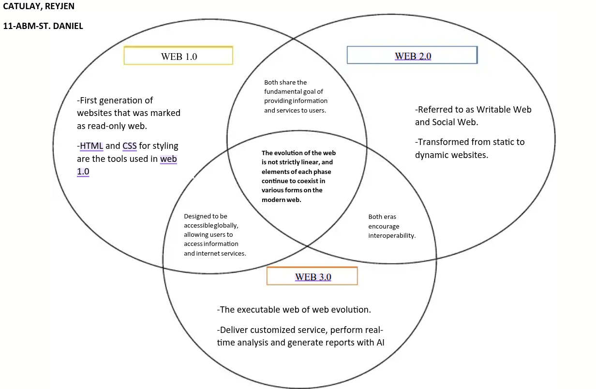

Para dar vida à World Wide Web, Tim Berners-Lee desenvolveu simultaneamente os pilares fundamentais da navegação:

"A Web é mais uma criação social do que técnica. Eu a projetei para ter um efeito social — ajudar as pessoas a trabalharem juntas — e não como um mero brinquedo tecnológico."
| ano | acontecimento | Importância para a Web ou Internet |
|---|---|---|
| 1969 | Criação da ARPANET | Primeira rede operacional de comutação de pacotes e o embrião da internet moderna. |
| 1971 | Invenção do E-mail | Ray Tomlinson criou o envio de mensagens entre usuários de rede, introduzindo o símbolo "@". |
| 1983 | Adoção Oficial do TCP/IP | Padronizou os protocolos de comunicação, unificando redes isoladas em uma "rede de redes". |
| 1983 | Criação do DNS | Paul Mockapetris criou o sistema que traduz nomes de domínio amigáveis em endereços IP numéricos. |
| 1989 | Proposta da World wide Web | Tim Berners-Lee concebeu o HTML, HTTP e URLs no CERN, dando origem à Web como conhecemos. |
| 1993 | Lançamento do Navegar NCSA Mosaic | Primeiro navegador popular a exibir imagens e texto juntos, acelerando a adoção pública da Web. |
| Fonte: Registros históricos da W3C, CERN e Computer History Museum. | ||